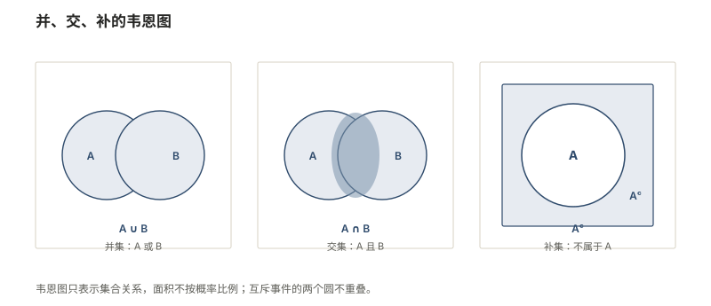

MTH113 · 第 2 章
概率基础
Probability
虚线下划线为术语；悬停查看中文、英文与释义，完整词典见“术语”。
本章目录
本讲建立概率的语言：用样本空间与事件描述随机现象，用公理与集合运算计算概率，用计数方法处理等可能结果，再用条件概率、独立性、全概率公式与 Bayes 法则把“已知信息”纳入计算。
本章要点
- 随机试验的样本空间 S 列出全部可能结果；事件是 S 的子集，事件运算对应集合运算。
- 概率满足非负性、总概率为 1 与互斥可加性；补集规则 P(Ac) = 1 − P(A) 是最常用的推论。
- 等可能概型用 P(A) = m/N，但“等可能”是假设，不能因为能列出结果就默认等可能。
- 计数先判断顺序是否重要：排列 P(n,r) 有序，组合 C(n,r) 无序，乘法原理处理多步骤。
- 一般加法法则要减去交集；“至少一个”常用补集“一个都没有”。
- 条件概率把条件事件变成新的参考集，P(A|B) 与 P(B|A) 通常不等。
- 独立要求 P(A∩B) = P(A)P(B)；互斥且有正概率的事件一定不独立。
- 全概率公式按划分拆路径，Bayes 法则由结果反推原因，先验、似然、后验三者要分清。
2.1 随机试验、样本空间与事件
随机试验chance experiment是结果在发生前不确定、但所有可能结果已知的过程。讲义例子：掷一颗骰子，可能结果 1 到 6；检查一件产品，合格或次品；记录送货状态，准时或延误；抽取一名学生，可记录专业、成绩、等级、出勤；测试医疗器械，通过、失败或不确定。
样本空间sample space是全部可能结果的集合，通常记作 S。掷一颗骰子 S = {1, 2, 3, 4, 5, 6}；抛两次硬币 S = {HH, HT, TH, TT}。计算概率之前必须先明确样本空间。
事件event是样本空间的子集，包含使该事件发生的那些结果。掷公平骰子时，A = {2, 4, 6} 表示偶数，B = {5, 6} 表示大于 4，C = {1} 表示点数为 1。事件可以含一个结果、多个结果、全部结果或没有结果。
事件分四类：简单事件simple event恰含一个结果，如 {3}；复合事件compound event含两个或更多结果，如 {2, 4, 6}；不可能事件impossible event不含结果，记 ∅；必然事件certain event含全部结果，即 S。
讲义的两产品例：每个产品记 G（好）或 D（次品），两个产品可区分，样本空间 S = {GG, GD, DG, DD}。恰有一个次品 A = {GD, DG}；至少一个次品 B = {GD, DG, DD}；没有次品 C = {GG}。GD 与 DG 必须算两个不同结果。
W2 p.6–11
2.2 集合语言与事件运算
设 A、B 是样本空间 S 中的事件。补事件complement Ac 表示 A 不发生；并事件union A ∪ B 表示 A 或 B 或两者都发生；交事件intersection A ∩ B 表示两者都发生；差 A \ B 表示 A 发生而 B 不发生。
讲义用韦恩图逐一呈现：并集是两个圆覆盖的全部区域，交集是两圆重叠区域，补集是 A 圆之外、S 之内的区域。把符号翻译成文字是概率的一项核心技能。
扑克牌活动给出五种翻译：A = 红桃，B = 人头牌。则 Ac 不是红桃；A ∩ B 既是红桃又是人头牌；A ∪ B 是红桃或人头牌或两者；A ∩ Bc 是红桃但不是人头牌；(A ∪ B)c 既不是红桃也不是人头牌。
互斥事件mutually exclusive events指不能同时发生的事件，即 A ∩ B = ∅。掷一颗骰子，A = {1, 3, 5} 与 B = {2, 4, 6} 互斥。若事件可以重叠，例如 A = {2, 4, 6}、B = {4, 5, 6}，则 A ∩ B = {4, 6} ≠ ∅，此时一般不能把概率直接相加。
De Morgan 法则De Morgan's laws把“非”分配到括号内：
白话版：不是（A 或 B）等于既不 A 也不 B；不是（A 且 B）等于非 A 或非 B。这两条在“至少一个”“两者都不”的转换中反复出现。

绘图提示词
Clean vector set of three Venn diagrams side by side inside a rectangle labelled S: first shades A union B, second shades A intersection B, third shades the complement of A. Thin 1.5 px outlines, muted slate blue fill for shaded regions, warm grey for outlines, white background, English labels A, B, S, no cartoon, no gradient, no shadow.
W2 p.14–22
2.3 概率公理、补集规则与“等可能”假设
概率函数对每个事件 A 指派一个数 P(A)，满足三条公理：
- 非负性：0 ≤ P(A) ≤ 1。
- 总概率：P(S) = 1。
- 可加性：若 A 与 B 互斥，则 P(A ∪ B) = P(A) + P(B)。
本讲所有概率规则都是这三条公理的推论。由 A 与 Ac 互斥且并为 S，得 P(A) + P(Ac) = 1，即补集规则
例：订单准时送达概率 0.92，则延误概率为 1 − 0.92 = 0.08。
若样本空间有 N 个等可能结果、事件 A 含 m 个结果，则 P(A) = m/N。掷一颗公平骰子，A = {2, 4, 6}，P(A) = 3/6 = 1/2。
讲义反复强调：等可能equally likely是一个假设，不是样本空间的自动属性。公平骰子每个面概率 1/6；但 S = {顾客购买, 顾客不购买} 两个结果并不自动各 1/2。不能因为能列出结果就指派相同概率。
W2 p.23–25、12–13
2.4 计数方法：乘法原理、排列与组合
等可能概型下，概率问题常转化为计数问题：P(A) = 有利结果数 / 全部结果数。讲义列出三类工具。
乘法原理multiplication principle：若一项任务有 m 种做法，第二项任务有 n 种做法，则两项合起来有 mn 种做法。产品码例：一个字母后接三位数字，允许重复，共 26 × 10 × 10 × 10 = 26,000 种。带限制的密码：3 个大写字母后接 2 位数字，字母不可重复、数字可重复，共 26 × 25 × 24 × 10 × 10 = 1,560,000 种。读题要看清“有放回/无放回”，它直接改变计数。
排列permutation是有序选取，顺序不同算不同结果：
例：8 名决赛者中颁发金、银、铜牌，P(8, 3) = 8 × 7 × 6 = 336。
组合combination是无序选取，顺序不同不算新结果：
例：8 名学生中选 3 人组成委员会，C(8, 3) = 56。
判断方法只有一个问题：改变顺序会不会产生新的结果？会，用排列；不会，用组合。讲义对照表：选主席、秘书、司库用排列；选 3 人委员会用组合；给 20 个产品排前 5 名用排列；从一批中选 5 件检查用组合；选 6 个彩票号码用组合；生成 4 位字符码用乘法原理。
W2 p.35–40
2.5 等可能概型与抽样问题
掷两颗公平骰子，样本空间是 6 × 6 = 36 个有序对 S = {(i, j) : i, j = 1, …, 6}。因为两颗骰子可区分，顺序要算。求和为 7 的事件 A = {(1,6), (2,5), (3,4), (4,3), (5,2), (6,1)}，共 6 个有利结果，P(A) = 6/36 = 1/6。
讲义特别警告：不能因为“和只有 11 种可能”就指派 1/11。各个和对应的底层结果数不同，2 与 12 各只有 1 种，7 有 6 种，所以和并不等可能。
另一个典型是超几何型抽样：一批 20 件产品，其中 5 件次品，不放回抽 4 件，求恰有 2 件次品的概率。全部样本数 C(20, 4)；有利样本数 C(5, 2) × C(15, 2)。于是
计数练习：10 本书中排 4 本上架，P(10,4) = 5040；从 10 本中选 4 本，C(10,4) = 210；12 个零件中 3 个次品、抽 5 个恰有 1 个次品，C(3,1)C(9,4) = 3 × 126 = 378；6 位数字码允许重复，106 = 1,000,000 种。
W2 p.26–27、41–43
2.6 加法法则与“至少一个”
互斥情形：若 A ∩ B = ∅，则 P(A ∪ B) = P(A) + P(B)。掷一颗骰子，A = {1, 2}、B = {5, 6}，P(A ∪ B) = 2/6 + 2/6 = 2/3。
一般情形：若 A 与 B 可以重叠，则
重叠部分被加了两次，所以要减一次。课程例：80% 学生修统计，50% 修物理，40% 两门都修。P(S ∪ P) = 0.80 + 0.50 − 0.40 = 0.90。“至少修一门”对应并集。
“恰好一个事件发生”的概率为 P(A ∩ Bc) + P(Ac ∩ B)，也可写成 P(A ∪ B) − P(A ∩ B)。课程例中恰好修一门 = 0.90 − 0.40 = 0.50。
“至少一个”最常用的技巧是补集：
例：3 台独立设备各以 0.95 的概率正常工作，至少一台失效的概率 = 1 − 全部正常 = 1 − 0.953 = 0.142625。直接分情况相加要处理“恰好一台、恰好两台、三台都坏”，补集只算一种。
| 文字 | 集合表达 |
|---|---|
| 不是 A | Ac |
| A 或 B | A ∪ B |
| A 且 B | A ∩ B |
| 至少一个 | “一个都没有”的补集 |
| A、B 中恰好一个 | (A ∩ Bc) ∪ (Ac ∩ B) |
| 只有 A | A ∩ Bc |
| 两者都不 | (A ∪ B)c = Ac ∩ Bc |
W2 p.28–33
2.7 条件概率
条件概率conditional probability是在已知 B 发生的条件下 A 发生的概率：
条件 B 把样本空间缩小到 B，分母随之改变。用面积理解：P(A|B) = “既在 A 又在 B 中的面积” / “B 的面积”。
讲义用 200 名顾客的二维表：网购 90 人，其中满意 72、不满意 18；到店 110 人，其中满意 88、不满意 22；合计满意 160、不满意 40。则
两个数完全不同，因为分母不同：前者以网购者为参考集，后者以满意者为参考集。P(A|B) 与 P(B|A) 通常不相等，这是条件概率最常见的错误来源。
Clean vector Venn diagram with rectangle S and two overlapping circles A and B; the region B is shaded light blue and the overlap A intersection B is shaded darker, with a caption suggesting that conditioning on B makes B the new reference set. Thin 1.5 px strokes, muted slate blue and warm grey, white background, English labels A, B, S, no cartoon, no gradient, no shadow.
W2 p.44–46
2.8 乘法法则与独立性
由条件概率定义两边乘以 P(B)，得乘法法则multiplication rule：
它用于“且”的概率。讲义用树状图组织条件概率：先分“次品 D / 非次品 Dc”，概率 0.04 / 0.96；再分“检测失败 / 通过”，在 D 下为 0.90 / 0.10，在 Dc 下为 0.02 / 0.98。则 P(D ∩ 失败) = 0.04 × 0.90 = 0.036。树状图把每条路径的概率相乘，是处理多阶段试验的常用工具。
独立性independence：已知一个事件发生不改变另一个事件的概率，即 P(A|B) = P(A)（当 P(B) > 0）。等价条件是
用顾客表检验：P(满意) = 160/200 = 0.80，P(满意 | 网购) = 72/90 = 0.80，两者相等，所以在这个样本中满意度与购买渠道看起来独立。
独立与互斥是两件事。若 P(A) > 0、P(B) > 0 且 A、B 互斥，则 P(A∩B) = 0，而独立要求 P(A)P(B) > 0，矛盾。因此有正概率的互斥事件一定不独立。掷一颗骰子，A = {1} 与 B = {2} 互斥，但不独立：知道 A 发生就使 B 的概率变为 0。
W2 p.47–51
2.9 划分与全概率公式
事件 B1, B2, …, Bk 构成样本空间的一个划分partition，若它们两两互斥且并集为整个 S：
例：若每件产品恰好来自供应商 A、B、C 之一，则三个供应商类别构成一个划分。
若 B1, …, Bk 是划分，则对任意事件 E，全概率公式law of total probability为
两组时即 P(E) = P(E|B1)P(B1) + P(E|B2)P(B2)。当一个事件可以通过若干互斥路径发生时，就把各路径的“路径概率”相加。
供应商例：A 提供 70% 零件、次品率 2%；B 提供 30%、次品率 5%。设 D 为抽到次品。则 P(A∩D) = 0.02 × 0.70 = 0.014，P(B∩D) = 0.05 × 0.30 = 0.015，P(D) = 0.014 + 0.015 = 0.029。
全概率公式的关键是“不重不漏”：划分必须覆盖所有可能来源，且各来源不能重叠。若漏掉一个供应商，分母就会偏小，后面的 Bayes 结果也会错。
W2 p.52–55
2.10 Bayes 法则
若 B1, …, Bk 是划分，则
它把条件方向翻过来：从“给定原因时证据出现的概率”推出“给定证据时原因的概率”。三个名词要分清：先验概率prior probability P(Bj) 是观察证据前的概率；似然likelihood P(E|Bj) 是该原因下出现证据的概率；后验概率posterior probability P(Bj|E) 是看到证据后的更新概率。分母就是全概率公式算出的证据总概率。
讲义用保修索赔做多组综合例：Basic 占销量 0.50、索赔率 0.03；Standard 占 0.35、索赔率 0.04；Premium 占 0.15、索赔率 0.08。设 C 为发生索赔，则
Premium 只占销量的 15%，却贡献了约 29.3% 的索赔。Bayes 法则把“销量占比”和“索赔率”两个信息合并，得到反方向的归因比例。
W2 p.56、61–62
2.11 Bayes 应用：诊断检验与自然频数
讲义用罕见病检测说明“基础率”的作用。某病影响 1% 的人；检测在患病者中阳性概率 0.95，在未患病者中阳性概率 0.04。设 D 为患病、+ 为阳性。已知 P(D) = 0.01，P(Dc) = 0.99，P(+|D) = 0.95，P(+|Dc) = 0.04。
先算阳性总概率：
即使检测为阳性，患病概率也只有约 19.35%，因为疾病罕见，而 99% 的健康人产生的假阳性数量远大于 1% 患者中的真阳性。讲义用 10,000 人自然频数表复核：患病 100 人中阳性 95、阴性 5；未患病 9,900 人中阳性 396、阴性 9,504；阳性合计 491，P(D|+) = 95/491 ≈ 0.1935。自然频数往往比公式更容易解释。
常见错误：把 P(+|D) 当成 P(D|+)；忘记假阳性项 P(+|Dc)P(Dc)；忽略基础率 P(D)；把一次阳性当成确定证据。
W2 p.57–60
2.12 决策表、公式总表与常见错误
讲义用一张“这句话是什么意思”的决策表收束全讲：看到“or / at least one”用并集；看到“and”用交集；看到“given”用条件概率；事件有重叠就用一般加法法则；确认独立才把概率相乘；需要反转条件方向就用 Bayes 法则。
| 情境 | 公式 |
|---|---|
| 补集 | P(Ac) = 1 − P(A) |
| 一般加法 | P(A∪B) = P(A) + P(B) − P(A∩B) |
| 互斥加法 | P(A∪B) = P(A) + P(B) |
| 条件概率 | P(A|B) = P(A∩B) / P(B) |
| 乘法法则 | P(A∩B) = P(A|B)P(B) |
| 独立 | P(A∩B) = P(A)P(B) |
| 全概率 | P(E) = Σ P(E|Bi)P(Bi) |
| Bayes | P(Bj|E) = P(E|Bj)P(Bj) / Σ P(E|Bi)P(Bi) |
讲义列出七类错误：无理由假设等可能；混淆并集与交集；重叠事件相加却不减交集；把互斥当成独立；混淆 P(A|B) 与 P(B|A)；Bayes 中漏掉基础率；该用组合时用了排列或反之。
W2 p.63–65